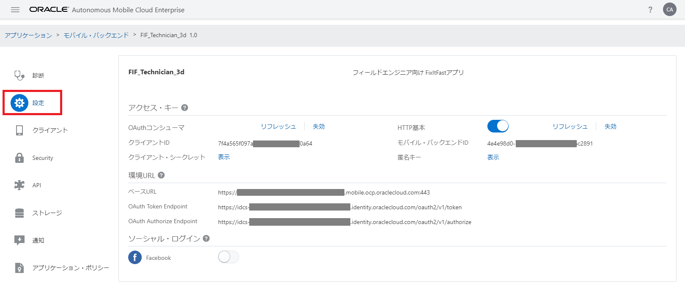
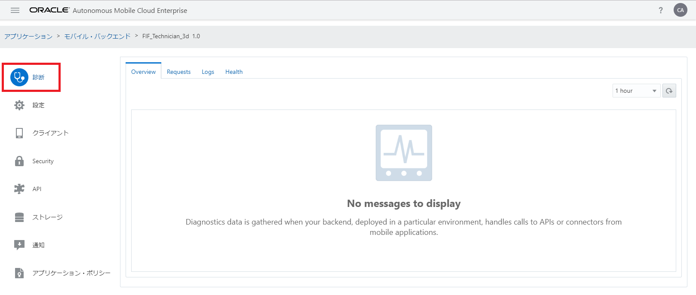
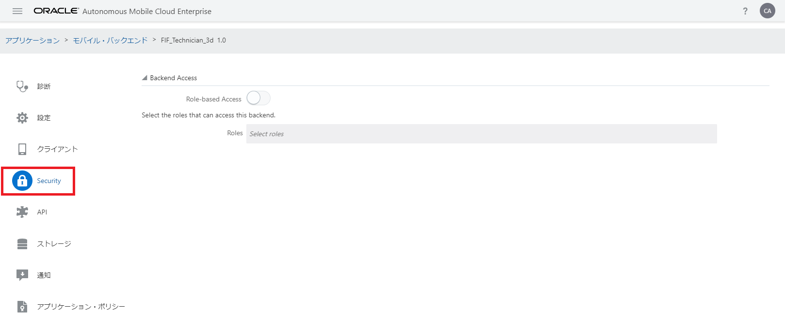
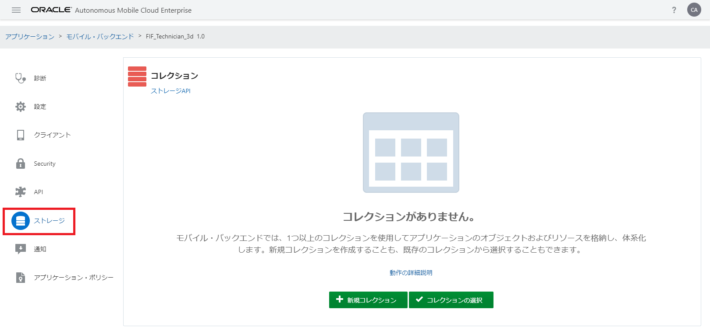

モバイル・バックエンドの作成
ここでは、モバイル・バックエンドを作成します。また、AMCeのサービス・コンソールが提供しているモバイル・バックエンドの構成のための機能について一通り説明します。
Step-1 AMCeのサービス・コンソールにログインします。「ホーム」ページが表示されたら、画面左上にあるハンバーガー・アイコンをクリックします。
図：画面左上のハンバーガー・アイコンをクリック
Step-2 画面の左側にメニュー・パネルが表示されます。「アプリケーション」をクリックして、「アプリケーション」ページを開きます。
図：画面左のメニューから「アプリケーション」をクリック
メニューの右横にあるハンバーガー・アイコンをクリックすると、メニューを閉じることができます。
Step-3 「アプリケーション」ページにある「モバイル・バックエンド」をクリックします。
図：「アプリケーション」ページで「モバイル・バックエンド」をクリック
Step-4 「モバイル・バックエンド」ページが表示されます。「新規モバイル・バックエンド」ボタンをクリックします。
図：【モバイル・バックエンドがまだ一つも作成されていない場合】「モバイル・バックエンド」ページ
図：【モバイル・バックエンドがすでに作成されている場合】「モバイル・バックエンド」ページ
Step-5 「新規モバイル・バックエンド」ダイアログ・ボックスがポップアップします。下記の表のようにモバイル・バックエンドの名前と説明を入力して「作成」ボタンをクリックします。
表：「新規モバイル・バックエンド」ダイアログ・ボックスに入力する値
| 入力項目 | 説明 |
|---|---|
| 名前 | FIF_Technician_xx （xxはAMCeインスタンス内で一意となる文字列） |
| 説明 | （モバイル・バックエンドを説明する任意の文字列） |
図：「新規モバイル・バックエンド」ダイアログ・ボックス
Step-6 モバイル・バックエンドが作成されると、作成されたモバイル・バックエンドの「設定」ページが表示されます。このページではモバイル・アプリケーションで用いる認証方式など、AMCe上のリソースにアクセスするために必要な情報の設定および確認が可能です。

図：モバイル・バックエンドの「設定」ページ
Step-7 モバイル・バックエンドの「診断」ページでは、モバイル・バックエンドに関連付けられたモバイル・アプリからのリクエスト状況の確認やログを参照できます。

図：モバイル・バックエンドの「診断」ページ
Step-8 モバイル・バックエンドの「クライアント」ページでは、モバイル・バックエンドを介してAMCe上のリソースにアクセスするモバイル・アプリを登録できます。
図：モバイル・バックエンドの「クライアント」ページ
モバイル・アプリに対してプッシュ通知を送信する場合は、プラットフォームごとに必要な証明書などの情報を登録します。プッシュ通知を送信しない場合は、モバイル・アプリの登録は必須ではありません。登録することによってアプリを識別するためのキーが発行されるので、アプリごとにアクセス状況を監視または分析できます。
Step-9 モバイル・バックエンドの「Security」ページでは、Role-based Accessを可能にし、ユーザー・ロールを指定することで、バックエンド（さらに、それが表すリソース）にセキュリティの追加レイヤーを提供します。

図：モバイル・バックエンドの「Security」ページ
Step-10 モバイル・バックエンドの「API」ページでは、モバイル・アプリに対して公開するカスタムAPIを選択します。詳細は『モバイル・バックエンドとカスタムAPIの関連づけ』で説明します。
図：モバイル・バックエンドの「API」ページ
Step-11 モバイル・バックエンドの「ストレージ」ページは、AMCeのプラットフォームAPIの１つ、Storage APIを使用してアプリケーション・データをサーバー・サイドに永続化するための構成情報を選択できます。

図：モバイル・バックエンドの「ストレージ」ページ
Step-12 モバイル・バックエンドの「通知」ページを使用すると、「クライアント」ページで登録したモバイル・アプリに対してプッシュ通知を送信することができます。モバイル・アプリに対してプッシュ通知を送信する場合は、iOSやAndroid、Windowsでそれぞれ手続きが異なります。AMCeを使用する場合は、ユーザーがどのプラットフォームを使用しているかを意識する必要がありません。「クライアント」ページからモバイル・アプリを適切に登録されていれば、一度に複数のプラットフォームの端末に対してプッシュ通知を送信できます。
図：モバイル・バックエンドの「通知」ページ
Step-13 モバイル・バックエンドの「アプリケーション・ポリシー」ページでは、モバイル・アプリが共通で使用するカスタム・プロパティを定義し、値を制御することができます。アプリケーション・ポリシーの値は、プラットフォームAPIによって簡単にアクセスし取得することができます。
図：モバイル・バックエンドの「アプリケーション・ポリシー」ページ